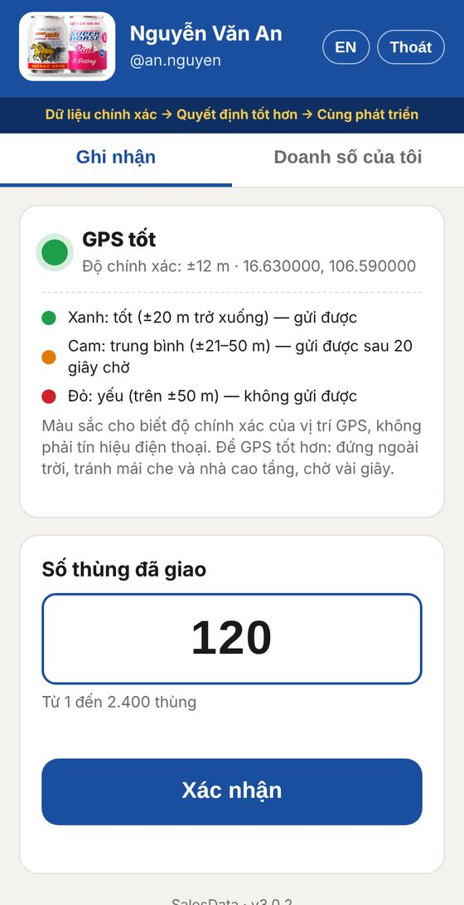
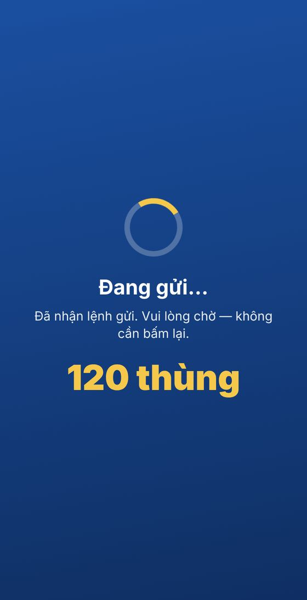
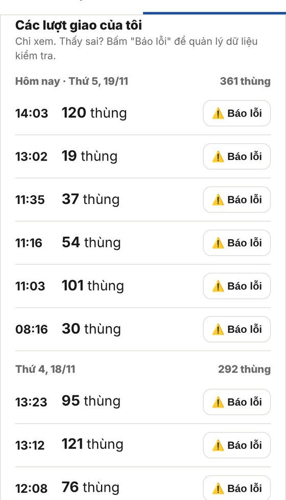

Hướng dẫn sử dụng SalesDataHow to use SalesData
Ghi nhận mỗi lần giao thùng Super Horse cho khách hàng sau đại lý cấp 1, xem doanh số của bạn, và báo lỗi khi nhập sai. Record every drop-off of Super Horse boxes to customers below DL1 distributors, see your own sales, and report a mistake if you entered something wrong.
Vì sao cần ghi nhận?Why we record drop-offs
Mỗi lần giao hàng được ghi nhận chính xác giúp chúng ta biết khách hàng của mình ở đâu. Chúng ta dùng dữ liệu đó để lập kế hoạch tốt hơn, hỗ trợ khách hàng tốt hơn, và cùng nhau phát triển công ty của chúng ta — Super Horse Energy Drink.
Every drop-off you record accurately shows us where our customers are. We use that data to plan smarter, support our customers better, and grow our company, Super Horse Energy Drink, together.
| Dữ liệu dùng đểWe use the data to | |
|---|---|
| Tìm thị trườngFind our markets | Biết khu vực nào bán chạy và nơi cần mở rộng.See which areas sell most and where to expand. |
| Kế hoạch hàng & giao hàngPlan stock & delivery | Đúng số lượng, đúng nơi, đúng lúc.The right amount, in the right place, at the right time. |
| Hỗ trợ nhà phân phốiSupport distributors | Hiểu cách hàng đi từ đại lý cấp 1 và giúp họ bán nhiều hơn.Understand how product moves on from DL1 and help them sell more. |
| Marketing đúng chỗTarget marketing | Quảng bá ở nơi hiệu quả nhất.Promote where it has the most impact. |
1Bắt đầuGetting started
- Mở đường link ứng dụngOpen the app link Quản lý sẽ gửi cho bạn đường link, tên đăng nhập và mã PIN 4 số. Giữ bí mật mã PIN. Your manager sends you the link, your username and a 4-digit PIN. Keep your PIN private.
- Thêm vào màn hình chínhAdd it to your home screen iPhone (Safari): bấm Chia sẻ → Thêm vào MH chính. Android (Chrome): bấm ⋮ → Thêm vào màn hình chính. Lần sau chỉ cần chạm vào biểu tượng. iPhone (Safari): tap Share → Add to Home Screen. Android (Chrome): tap ⋮ → Add to Home screen. Next time, just tap the icon.
- Cho phép Vị tríAllow Location Khi điện thoại hỏi, chọn Cho phép. Ứng dụng cần vị trí để ghi nơi giao hàng. When the phone asks, choose Allow. The app needs your location to record where the boxes were delivered.
- Đăng nhập mỗi sángLog in each morning Nhập tên đăng nhập và mã PIN, bấm Đăng nhập. Phiên đăng nhập hết hạn lúc nửa đêm. Đăng nhập cần có mạng — hãy đăng nhập trước khi đi. Enter your username and PIN and tap Log in. Your login ends at midnight. Logging in needs signal, so do it before you head out.
- Đọc lời chào và bấm OKRead the welcome message and tap OK

Nút EN / VI ở góc trên đổi ngôn ngữ. Nút ? mở hướng dẫn này.The EN / VI button at the top switches language. The ? button opens this guide.
2Ghi nhận một lượt giao hàngRecord a drop-off
Làm ngay tại điểm giao hàng — mỗi điểm giao là một lần ghi nhận.Do it at the drop-off point, one entry for each place you deliver to.
- Chờ GPS chuyển xanhWait for green GPS
Màu sắc cho biết độ chính xác của vị trí, không phải tín hiệu điện thoại.
The colour shows how accurate your location is, not your phone signal.
XanhGreen ±20 m Gửi được ngay.You can submit now. CamOrange ±21–50 m Gửi được sau 20 giây chờ (hoặc chờ chuyển xanh).You can submit after waiting 20 seconds (or wait for green). ĐỏRed >50 m Chưa gửi được. Ra chỗ thoáng.Cannot submit yet. Move to an open spot. - Nhập số thùngEnter the number of boxes Từ 1 đến 2.400 thùng. Trên 500 thùng, ứng dụng hỏi lại để tránh gõ nhầm. From 1 to 2,400 boxes. Above 500, the app asks you to double-check to catch typos.
- Bấm Xác nhậnTap Confirm Xác nhận sáng lên khi GPS và số thùng hợp lệ.Confirm turns on when the GPS and box count are OK.
- Kiểm tra lại rồi bấm GửiCheck, then tap Submit Màn hình Kiểm tra lại hiện số thùng, thời gian và vị trí. Bấm Gửi, hoặc Quay lại sửa nếu cần sửa. The Check again screen shows boxes, time and location. Tap Submit, or Go back and edit to change it.
- Chờ màn hình "Đang gửi…"Wait for "Sending…" Màn hình xanh hiện ngay khi bạn bấm Gửi. Không cần bấm lại. A blue screen appears as soon as you tap Submit. No need to tap again.
- Xem kết quảSee the result ✓ Gửi thành công — đã lưu. ⏳ Đã lưu trên máy — chưa có mạng, sẽ tự gửi sau. Bấm Ghi nhận mới cho điểm giao tiếp theo. ✓ Sent successfully: saved. ⏳ Saved on phone: no signal, it will send automatically later. Tap New entry for your next drop-off.





Để GPS tốt hơn: đứng ngoài trời, tránh mái che và nhà cao tầng, chờ vài giây.For better GPS: stand outdoors, away from roofs and tall buildings, and wait a few seconds.
3Xem doanh số của tôiSee my sales
Chạm tab Doanh số của tôi. Đây là màn hình chỉ xem — bạn không thể sửa dữ liệu ở đây. Tap the My sales tab. This screen is view only; you can't change data here.
| MụcItem | Ý nghĩaWhat it shows |
|---|---|
| Hôm nayToday | Tổng số thùng và số lượt giao hôm nay.Total boxes and drop-offs today. |
| Tháng nàyThis month | Tổng tháng, và so với cùng kỳ tháng trước (▲ tăng / ▼ giảm).Month total, compared with the same point last month (▲ up / ▼ down). |
| Số thùng mỗi ngàyBoxes per day | Biểu đồ cột của tháng này. Cột vàng = hôm nay.Bar chart for this month. Gold bar = today. |
| Ngày làm việc · TB / lượt · Ngày tốt nhấtActive days · Avg / drop · Best day | Số ngày có giao hàng, trung bình thùng mỗi lượt, ngày nhiều nhất.Days with deliveries, average boxes per drop-off, and your biggest day. |
| Các lượt giao của tôiMy drop-offs | Từng lượt giao theo ngày, mới nhất trước, kèm trạng thái.Each drop-off by day, newest first, with its status. |


Trạng tháiStatuses
| Chưa gửi (chờ mạng)Not sent yet | Đang lưu trên điện thoại, sẽ tự gửi khi có mạng.Saved on your phone; sends automatically when you have signal. |
| ✏️ Chờ duyệtPending review | Bạn đã báo lỗi, quản lý dữ liệu chưa xử lý.You reported a mistake; a data manager hasn't reviewed it yet. |
| Đã sửaAmended | Đã duyệt. Hiện số gốc → số mới.Approved. Shows original → new number. |
| Đã hủyVoided | Mục bị trùng/sai đã được hủy — không tính vào doanh số.Duplicate or wrong entry was voided and no longer counts. |
| Bị từ chốiRejected | Quản lý không đồng ý. Lý do hiện ngay bên cạnh.The manager didn't agree. The reason is shown next to it. |
Số trên tab (ví dụ 1) là số yêu cầu đang chờ duyệt. Bấm Làm mới để cập nhật. The number on the tab (e.g. 1) is how many of your requests are waiting. Tap Refresh to update.
4Báo lỗi khi nhập saiReport a mistake
Bạn không thể tự sửa dữ liệu. Nếu nhập sai, hãy báo lỗi để quản lý dữ liệu kiểm tra. Đừng gửi thêm một lượt mới để "sửa" — sẽ thành trùng. You can't edit data yourself. If you entered something wrong, report it so a data manager can check. Don't submit a second entry to "fix" it: that creates a duplicate.
- Mở tab Doanh số của tôiOpen My salesTìm lượt giao bị sai.Find the wrong entry.
- Bấm ⚠️ Báo lỗiTap ⚠️ Report
- Chọn loại lỗiChoose what's wrong Sai số thùng (nhập số đúng) · Mục bị trùng (nhập 2 lần) · Không phải lượt giao của tôi. Thêm ghi chú nếu cần. Wrong number of boxes (type the correct number) · Duplicate (entered twice) · Not my drop-off. Add a note if useful.
- Bấm Gửi yêu cầuTap Send requestCần có mạng. Trạng thái chuyển thành ✏️ Chờ duyệt.Needs signal. The status changes to ✏️ Pending review.
- Chờ kết quảWait for the resultMở lại tab để xem: Đã sửa, Đã hủy, hoặc Bị từ chối (kèm lý do).Check the tab again later: Amended, Voided, or Rejected (with a reason).

| Quy tắcRule | |
|---|---|
| Thời hạnTime limit | Báo lỗi được cho các lượt trong tháng này. Lượt của tháng trước: đến hết ngày 3 tháng này.You can report entries from this month. Last month's entries: until the 3rd of this month. |
| Mỗi lần một yêu cầuOne at a time | Một lượt giao chỉ có một yêu cầu đang chờ.Each entry can only have one request waiting. |
| Đổi ý?Changed your mind? | Bấm Hủy yêu cầu khi yêu cầu còn đang chờ.Tap Cancel request while it's still pending. |
| Dữ liệu gốcThe original | Không bao giờ bị xóa. Mọi thay đổi đều được ghi lại.Is never deleted. Every change is logged. |